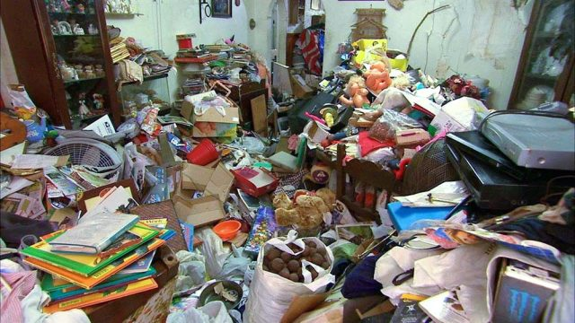

Limpieza síndrome de Diógenes
Acumulación de basura en casa
La observación de casos repetidos de mayores con comportamientos extremadamente huraños que vivían recluidos en sus propios hogares y rehuían cualquier contacto con otras personas motivó la aparición en la década de los 60 de un trabajo científico que detallaba este extraño patrón de conducta.
En 1975 fue bautizado como Síndrome de Diógenes, en referencia a Diógenes de Sínope, un filósofo de la época de Aristóteles famoso por preconizar un modo de vida austero y renunciar a todo tipo de comodidades.
Síntomas del síndrome de Diógenes
Aislamiento social, reclusión en el propio hogar y abandono de la higiene son las principales pautas de conducta. Las personas que lo sufren pueden llegar a acumular grandes cantidades de basura en sus domicilios y vivir voluntariamente en condiciones de pobreza extrema.
El anciano suele mostrar una absoluta negligencia en su autocuidado y en la limpieza del hogar. Suelen reunir grandes cantidades de dinero en su casa o en el banco sin tener conciencia de lo que poseen. Por el contrario, piensan que su situación es de pobreza extrema, lo que les induce a ahorrar y guardar artículos sin ninguna utilidad.
Es frecuente que almacenen cantidades grandísimas de basura y desperdicios sin ninguna utilidad. Incluso se han visto casos de personas que atesoraban billetes antiguos sin curso legal, bombonas de butano o latas de pintura.
Tratamientos
En primera instancia, el tratamiento para estas personas va dirigido a tratar las posibles complicaciones derivadas del mal estado nutricional e higiénico. Sin embargo, acto seguido es necesario instaurar medidas preventivas para que el cuadro no vuelva a repetirse.
Para ello se necesita un apoyo social suficiente, a través de una institución geriátrica o de asistencia domiciliaria. El problema es que los propios afectados suelen rechazar la ayuda social.
Si no están incapacitados por motivo de alguna patología psiquiátrica de base o una demencia, no pueden ser ingresados en una residencia sin su consentimiento, con lo que termina volviendo a su tipo de vida anterior.
Otros datos
Suele darse en ancianos con cierta tendencia al aislamiento, aunque también intervienen otros factores estresantes de la edad tardía como las dificultades económicas o la muerte de un familiar, y sobre todo, la soledad. La posición socioeconómica no protege de su aparición, ya que se conocen casos de personas que padecían el síndrome que poseían títulos universitarios, con un alto nivel económico y carreras profesionales brillantes.
Consejos a las familias: los familiares deberían vigilar a sus mayores que viven solos especialmente si han observado algún factor de riesgo, como un comportamiento huraño o un aislamiento voluntario. No obstante, con frecuencia resulta difícil ayudarlos ya que son ellos los que evitan todo tipo de atención. Esto hace que a veces llegue incluso a debatirse si se trata realmente de una enfermedad o sólo un estilo de vida.
